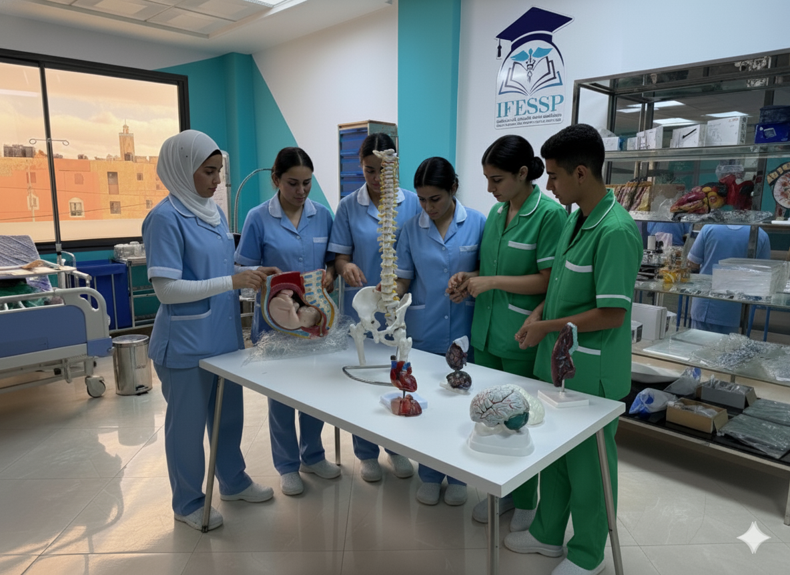

La formation d'Infirmier Auxiliaire est un programme intensif de 2 ans conçu pour préparer des professionnels de santé capables d'assister efficacement les infirmiers diplômés d'État. Cette formation allie compétences techniques et qualités humaines pour exercer dans divers établissements de soins.

Bases du corps humain et hygiène hospitalière
Techniques fondamentales de soins
Aide quotidienne et confort
Surveillance et prise de constantes
Asepsie et désinfection
Immersion en milieu hospitalier
Maladies fréquentes et prise en charge
Gestes techniques avancés
Pédiatrie, gériatrie
Relation patient-soignant
Pratique professionnelle avancée
Examen pratique et théorique
Assistant infirmier en hôpitaux
Soins en établissements privés
Soins aux personnes âgées
Assistance en urgences
Devenez Infirmier Auxiliaire et intégrez rapidement le monde professionnel de la santé
Postuler Maintenant